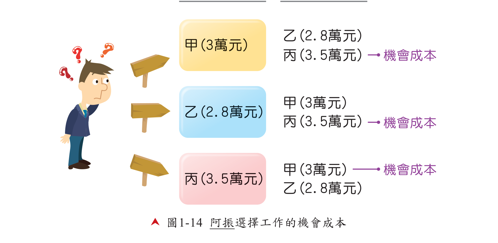
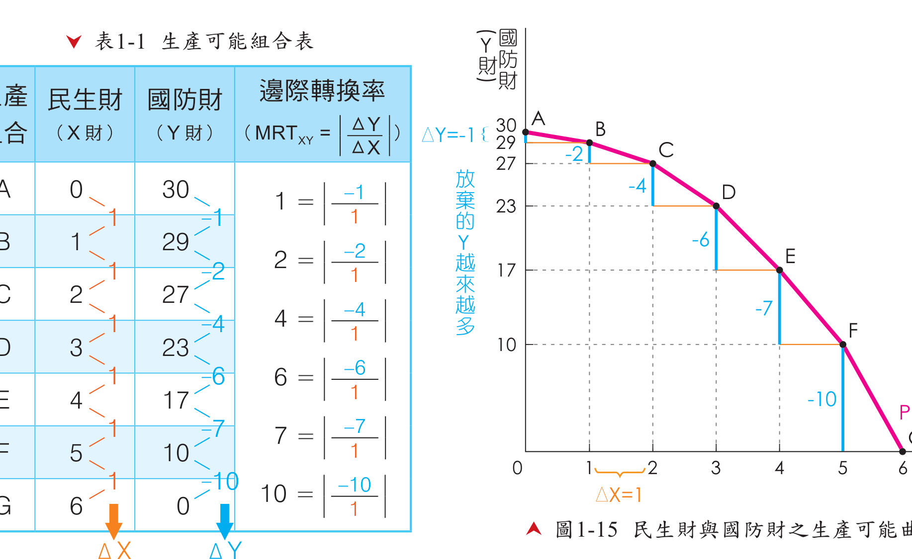
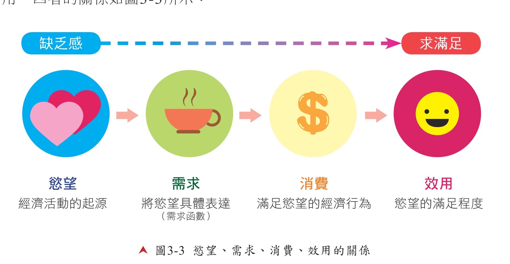
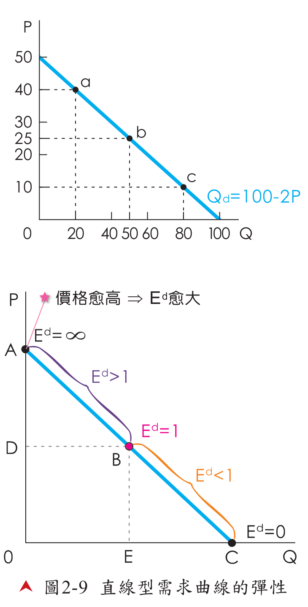

第 1 聯幅
統測商管群跨章思維重組 ｜ 整合 CH1 基礎觀念 ➔ CH3 效用理論 ➔ CH2 需求法則與彈性
🌿 一、稀少性與生產可能曲線
CH1 基礎觀念
1.1
經濟問題三大根源 ＆ 取捨
- 基本因果： 慾望無窮 ✕ 資源稀少 ✕ 多種用途 ➔ 產生選擇與取捨（Trade-off）。
- 六大基本問題（4W ＋ 2宏觀）：
• 前 4 問（個體）： 生產什麼、如何生產、何時生產、為誰生產 ➔ 由市場價格機能（看不見的手）解決。
• 後 2 問（總體）： 穩定經濟、促進成長 ➔ 由政府政策解決。
1.2
機會成本（Opportunity Cost）
- 機會成本鐵則： 面臨多種選擇時，所放棄的其他用途中「價值最高者」（非各項相加！）。
- 成本構成： 外顯成本（實際掏錢） ＋ 隱含成本（自有要素轉用代價）。

▲ 課本圖 1-14：阿振選擇甲(4萬)，機會成本為乙(3.5萬)
1.3
生產可能曲線（PPC）與 MRT
MRTXY ＝
放棄的 Y 財產量 (ΔY)增加的 X 財產量 (ΔX)
＝ PPC 之斜率絕對值
- 負斜率： 資源有限，多產 X 必須少產 Y。
- 凹向原點： 機會成本遞增法則（MRT 遞增，直指第4章報酬遞減）。
- 點位效率： 線上＝生產效率 ｜ 線內＝資源閒置/失業 ｜ 線外＝目前技術達不到。

▲ 課本圖 1-15：民生財 vs 國防財 PPC 曲線
🧠 二、效用理論與願付代價推導
CH3 消費行為
2.1
慾望特性 ＆ 效用因果四部曲
- 慾望五大特性： 種類無限性、強度遞減性（何時停止消費）、替代性、互補性、習慣性。

▲ 課本圖 3-3：欠缺感 ➔ 慾望 ➔ 需求 ➔ 消費 ➔ 效用
2.2
總效用（TU）與邊際效用（MU）
- 邊際效用遞減律： 連續消費某財貨，每增加一單位所增加的滿足感逐漸遞減。
- 統測必考三部曲：
① 當 MU ＞ 0 ➔ TU 持續上升。
② 當 MU ＝ 0 ➔ TU 達到最大！（最佳消費量）
③ 當 MU ＜ 0 ➔ TU 開始下降。 - 水與鑽石矛盾： 物品價格由「邊際效用 MU」決定，而非總效用 TU！水 TU 極大但 MU 極低故便宜；鑽石 MU 極高故昂貴。

▲ 課本圖 3-4：湘民吃太陽餅 TU 與 MU 走勢圖
2.3
消費者均衡 ＆ 導出需求曲線
MUXPX ＝
MUYPY ＝ MUM（貨幣邊際效用）
限制式：PX·X ＋ PY·Y ＝ 所得 M
- 導出需求線： 消費者願付最高價格 P ＝ MU / MUM，因 MU 遞減 ➔ 需求曲線向右下方傾斜！
- 消費者剩餘（CS）： 願付總額 － 實付總額（需求線下方、市價線上方之三角形面積）。

▲ 課本圖 3-7：需求曲線下方與市價上方為消費者剩餘 CS
⚖️ 三、市場需求、價格彈性與管制
CH2 需求與供給
3.1
需求法則 ＆ 點移動 vs 線平移
- 需求法則： 其他條件不變，價格（P）與需求量（Qd）呈反向變動。
- 統測常考陷阱（動vs移）：
• 需求量變動：本產品價格變動 ➔ 線上的點移動。
• 需求變動：所得、偏好、替代品/互補品價格變動 ➔ 整條線向右/向左平移！

▲ 課本圖 2-6：需求量變動（價格變動 ➔ 線上的點移動）
3.2
需求價格彈性 Ed 幾何判定
Ed ＝
下段長度 (P 點到橫軸)上段長度 (P 點到縱軸)
- • 中點上方： 下段 ＞ 上段 ➔ Ed ＞ 1（富有彈性）。
- • 正中點處： 下段 ＝ 上段 ➔ Ed ＝ 1（單一彈性）。
- • 中點下方： 下段 ＜ 上段 ➔ Ed ＜ 1（缺乏彈性）。
- • 兩軸截距： 縱軸 Ed ＝ ∞ ｜ 橫軸 Ed ＝ 0。

▲ 課本圖 2-9：直線型需求曲線五段彈性判定
3.3
彈性與總收入（TR） ＆ 政府管制
- 彈性與廠商總收入（TR ＝ P × Q）：
• Ed ＞ 1（富有彈性）： 降價 ➔ TR 增加（薄利多銷）；漲價 ➔ TR 減少。
• Ed ＜ 1（缺乏彈性）： 漲價 ➔ TR 增加；降價 ➔ TR 減少（穀賤傷農）。
• Ed ＝ 1（單一彈性）： 價格變動，TR 保持不變。 - 政府價格管制兩大鐵律：
• 價格上限（最高限價）： 設在均衡價下方（保護消費者） ➔ 造成市場短缺（缺貨、黑市、排隊）。
• 價格下限（最低限價）： 設在均衡價上方（保護生產者，如基本工資） ➔ 造成市場過剩。